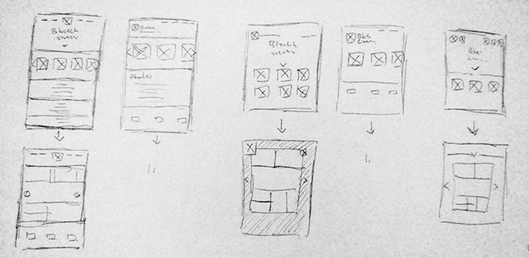

More Work


Home
OVERVIEW
What started out as a late night movie marathon between a few friends ended up in a heated discussion over why certain stories can and cannot be adapted into the big screen. With the recent surge of comic book movies and adapted teen novels on the market, as a group of young Asian adults that grew up with the lots of Dragon Ball, Gundam, Naruto, and One Piece, we couldn’t help but find ourselves at odd due to most of the failure of their adaption. With the recent successful adaptation of Big Hero 6 and as we are both fans of Pixar and Hayao Miyazaki’s work, we believe that anything with a good story that’s capable of driving the gears forward would help create a something great. We began with the idea of making just a website with our comics, but what if there’s more to it? What if we can inspire and help other artist and writers out to inspire the rest of the world? We want to help the generations to come see the world from our eyes, experience the wonders that brought us up, and ultimately carry on the legacy of the great story tellers that came before us.
RESEARCH
As a team and coming from a marketing background, I decided to do some primary and secondary research on the market. We knew that this was a side project but deep down we hope it would work out so we put our heart into it. Since the site is highly based on generating quality content and driving traffic to those contents, it’s crucial to take into consideration the market potential and applicable strategies to drive traffic to the site.
SWOT Analysis
Primary and Secondary market research
Web Analytics
Business Model: Value Proposition Analysis
Aside from marketing, a friend and I also helped with the design and creation of the website.
CREATING THE SITE
As a team we agreed that the targeted age group should range from 10-22. We had a general consensuses that we want the website to be simple and kid friendly. As we divided the work load, my specific task was to design the website layout with another member as well as create the name and logo for the site.
Branding
With our targeted audience in mind, I went ahead and brainstormed a lot of different names as we believe that the logo should be coherent with the name and vice versa. However the process of brainstorming for the name actually were more difficult then expected.
THE PROCESS
The process from brainstorming, to designing, to implementing requires a lot of time and energy. Our team worked continiously on the project. All that while I was also working on another project to be launched on the site, our very first original content. As a team we are currently working hard to produce contents and update as much as we possibly could. The first iteration of the project didn't turn out as well as we hoped. First of all, the overall look of the web page seem great during our planning phase, however the final design of the web site couldn't have the authenticity that we originally intended to have. The main issue arises from the fact that we were limited in our ability to code and overall knowledge of general web layout. I intended to apply what I've learn though out this course in the remaking of the site's layout. All in all we did achieve what we originally set out to do, which was having a site to display our original content. But our goal of driving traffic towards our site has yet to be fulfilled. Given the proper chance on creating another project, I would definitely spend more time on the idealization and creative process phase as currently the layout and the website still needs great amount of work. My original approach was to sketch only about 10 wire-frames for the layout and worked around those. However, this course has demonstrated to me that we must go through a lot more designs and sketches in order to have a chance of creating something extraordinary.
More Work
Home